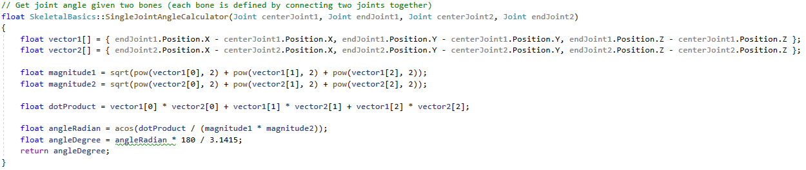

The server receives 2 separate JSON files each session: 1 from the Kinect, and 1 from the Apple Watch.
We need to merge the JSON files received by the server before displaying them.
We wanted to make sure that if any part of the system failed, no past sessions could be overwritten and we could not merge two files from two different sessions.
We started by choosing to delete the received JSONs after they'd been merged, but we were worried that if the system crashed before the files got deleted, it wouldn't be enough.
To remedy this, we added a user-entered session ID that needs to match in both JSON files in order for the merging process to happen:
With the Apple Watch code, one of the key algorithms was implementing a function that would recordthe number of spins the user has made. The function motionData() measures and tracks this.
This function uses a variable called motion which is of type CMMotionManager. This allows us to recieve four types of motion data including Gyroscope, Accelerometer, Magnetometer and Device-Motion Data.
We set the device motion update interval, meaning how frequently it should measure values (over what period of time) to a constant that we have dervied works best after extensive testing.
Next, we start the device motion updates and every time we get an update, we check if the two sensors that we use, are in the range of our pre-define values. If yes, we classify the movement as a spins and increase the spins counter for the number of spins by one.
In the kinect code, we provide a function which let you calculate the angle of your joint by specific which joint you want. This is achieved by two ways, depends on what joint it is, for joints like elbow where you will need the co-ordinate of the adjacent joints which are the shoulder and the wrist joint. For joints like should, as the angle you want is actually the angle between the side of your body and the arm, so you can't just use the adjacent joint to calculate it, this is where the second way come to use, in this way, we will use two joints: upper spine and base spine to determine the position of your body, and caculate the angle between this line connected by two spine joints and the arm for example.
Then we have a joint angle calculator function which using vector math to determine the actual distance between these joints provided by their co-ordinate.